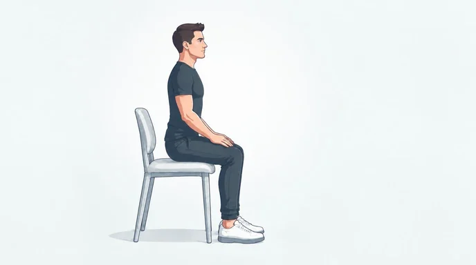

Poradniki dla kręgosłupa
Praktyczne wskazówki na co dzień: praca przy biurku, krótkie ćwiczenia, ruch i bezpieczeństwo. Każdy poradnik opiera się na wytycznych i badaniach, a źródła podajemy pod tekstem.

Praca przy biurkuJak siedzieć przy biurkuJak ustawić krzesło, biurko, monitor i laptopa, żeby wygodnie pracować. Zalecenia BHP, schemat stanowiska i checklista. Dlaczego ważniejsza jest zmiana pozycji.Czytaj- Ćwiczenia5 ćwiczeń na kark w przerwiePięć prostych ćwiczeń na kark i barki do zrobienia przy biurku w 5 minut. Z animacjami i opisem krok po kroku. Jak ćwiczyć bezpiecznie i kiedy iść do lekarza.Czytaj
- BezpieczeństwoKiedy ból pleców wymaga lekarzaBól pleców lub karku: kiedy dzwonić pod 112, kiedy iść do lekarza w ciągu doby, kiedy umówić wizytę, a kiedy wystarczy ruch i obserwacja.Czytaj
 Praca przy biurkuPrzerwy w pracy przy komputerzeIle przerwy daje BHP i Kodeks pracy, jak często wstawać od biurka, co robić w przerwie i ile chodzić w ciągu dnia. Z czterema prostymi ćwiczeniami.Czytaj
Praca przy biurkuPrzerwy w pracy przy komputerzeIle przerwy daje BHP i Kodeks pracy, jak często wstawać od biurka, co robić w przerwie i ile chodzić w ciągu dnia. Z czterema prostymi ćwiczeniami.Czytaj